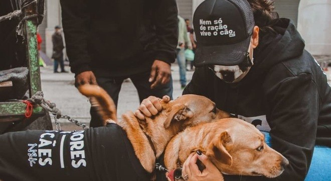

Com a evolução de pensamento das pessoas em relação aos direitos do animais, novas formas de proteção e busca por esses direitos foram surgindo. Dentro dessas formas, a criação de ONG de animais talvez seja a mais importante delas.
ONGs são Organizações Não Governamentais caracterizadas por ações sociais e políticas. São fundações sem fins lucrativos e, na maioria, de caráter autônomo. Geralmente vivem de patrocínios e doações. Uma ONG de animais funciona com esse propósito direcionado ao cuidado e à defesa dos bichinhos.
Fonte: https://www.cachorrogato.com.br/cachorros/ong-animais/
"Juntos podemos fazer a diferença na cidade de Palmas"
Fulano da Silva, voluntário
O importante nessa questão é ressaltar que, em sua maioria, o trabalho em uma ONG é voluntário. E que as ONGs abrangem desde os problemas mais específicos, até os mais gerais na questão da proteção animal. E que deve-se sempre procurar se informar sobre a ONG de animais que você esta ajudando, se realmente existem e são idôneas, pois hoje em dia temos muitas ONgs falsas se aproveitando de pessoas de bem para ganhar dinheiro.
Fonte: https://www.cachorrogato.com.br/cachorros/ong-animais/
Contato: (63) 00000-0000
Email: xxxxxx@xxxx.com